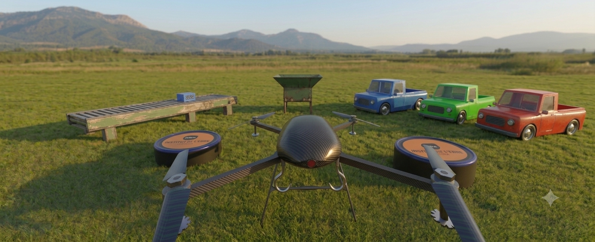
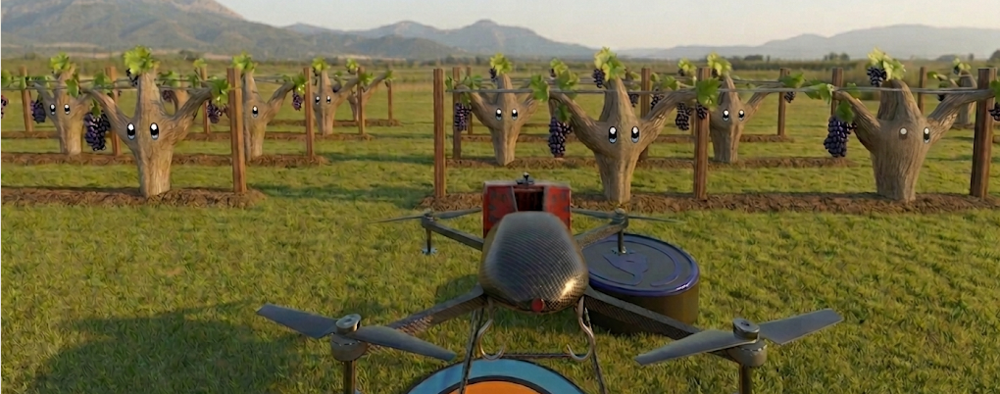

Què és VirtuDron?
VirtuDron és un simulador especialment dissenyat per a l'aprenentatge de diferents tècniques de digitalització i automatització amb drons.
Tots els recursos necessaris per a realitzar aquest curs estan disponibles en el següent enllaç.
Introducció al simulador
Aprèn a utilitzar el simulador VirtuDron.
Introducció a la realitat virtual i realitat mixta
Introducció al món de la realitat virtual (VR) amb les Quest3s i el simulador VirtuDron.

Control remot del Dron
En aquest mòdul aprenem a realitzar operacions d'automatització amb Node-Red amb el simulador VirtuDron.
Introducció Node-Red
Introducció a Node-Red.
Conceptes de xarxes locals
Conceptes importants de xarxes locals: IP i port.
Comandes al simulador VirtuDron amb Node-Red
Comandes al simulador VirtuDron amb Node-Red
Comandes de Node-Red a Quest3S en xarxa local
Comandes de Node-Red a Quest3S en xarxa local
Seqüències del Dron amb Node-Red
Seqüències del Dron amb Node-Red
Obtindre dades de telemetria amb Node-Red
Obtindre dades de telemetria amb Node-Red
Separar les dades de telemetria
Separar les dades de telemetria
Exemple de seqüència amb consulta de dades de telemetria
Exemple de seqüència amb consulta de dades de telemetria
Automatització amb dades de telemetria
Automatització amb dades de telemetria

Automatització de tasques de repartiment amb Node-Red
Aprenem a automatitzar una tasca de repartiment de productes amb un dron utilitzant Node-Red.
Presentació de l'escena de repartiment
Vídeo de presentació de l'escena del simulador VirtuDron que s'utilitzarà en el Mòdul 2.
Funcionalitats bàsiques de control
Es repassen les funcionalitats bàsiques de control del dron disponibles en la llibreria de Node-Red.
Automatització simple pas a pas
Es resol un exercici pas a pas com a base per a les activitats que es proposaran.
Nodes auxiliars del mòdul
S'explica el funcionament dels nodes auxiliars per a resoldre totes les activitats del mòdul.
Activitats Pràctiques
Vídeos explicatius amb els enunciats de les activitats a realitzar per l'alumnat.
Activitat 1
Vídeo explicatiu per a la resolució de l'Activitat 1.
Activitat 2
Vídeo explicatiu per a la resolució de l'Activitat 2.
Activitat 3
Vídeo explicatiu per a la resolució de l'Activitat 3.
Activitat 4
Vídeo explicatiu per a la resolució de l'Activitat 4.
Activitat 5
Vídeo explicatiu per a la resolució de l'Activitat 5.
Activitat 6
Vídeo explicatiu per a la resolució de l'Activitat 6.
Activitat 7
Vídeo explicatiu per a la resolució de l'Activitat 7.

Automatització de tasques de sulfatació amb Node-Red
Aprenem a automatitzar una tasca de sulfatació amb un dron utilitzant Node-Red.
Presentació de l'escena de sulfatació
Vídeo de presentació de l'escena del simulador VirtuDron que s'utilitzarà en el Mòdul 3.
Funcionalitats bàsiques de control
Es repassen les funcionalitats bàsiques de control del dron disponibles en la llibreria de Node-Red.
Nodes auxiliars del mòdul 3
S'explica el funcionament dels nodes auxiliars per a resoldre totes les activitats del mòdul.
Activitats Pràctiques
Vídeos explicatius amb els enunciats de les activitats a realitzar per l'alumnat.
Activitat 1
Vídeo explicatiu per a la resolució de l'Activitat 1.
Activitat 2
Vídeo explicatiu per a la resolució de l'Activitat 2.
Activitat 3
Vídeo explicatiu per a la resolució de l'Activitat 3.
Activitat 4
Vídeo explicatiu per a la resolució de l'Activitat 4.
Activitat 5
Vídeo explicatiu per a la resolució de l'Activitat 5.
Activitat 6
Vídeo explicatiu per a la resolució de l'Activitat 6.
Activitat 7
Vídeo explicatiu per a la resolució de l'Activitat 7.
Activitat 8
Vídeo explicatiu per a la resolució de l'Activitat 8.
Activitat 9
Vídeo explicatiu per a la resolució de l'Activitat 9.
Activitat 10
Vídeo explicatiu per a la resolució de l'Activitat 10.